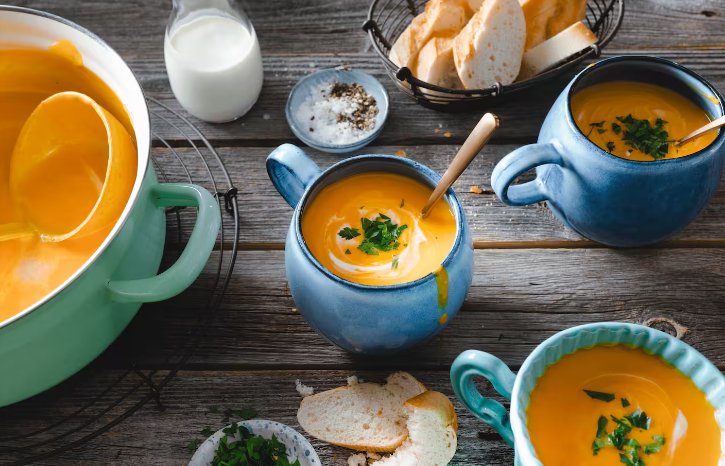

Klassische Kürbissuppe
Zutaten
- 1 kg Hokkaido-Kürbis
- 2 mehligkochende Kartoffeln
- 1 Zwiebel
- 1 Zehe(n) Knoblauch
- 2 EL Butterschmalz
- 1.2 l Gemüsebrühe
- 2 Stiel(e) glatte Petersilie
- 100 ml Sahne
- Pfeffer
- Salz
Zubereitung
- Kürbis waschen, halbieren und die Fasern mit den Kernen entfernen.
- Dann in Würfel schneiden.
- Kartoffeln und Zwiebel schälen und würfeln.
- Knoblauch schälen.
- Butterschmalz in einem Topf erhitzen und Zwiebeln und Knoblauch glasig anbraten.
- Kürbiswürfel und Kartoffeln dazugeben, 2-3 Minuten andünsten und mit Gemüsebrühe ablöschen.
- Suppe 30 Minuten köcheln lassen und gelegentlich umrühren.
- Petersilie waschen, trocken schütteln und grob hacken.
- Suppe pürieren, die Sahne zugeben und mit Pfeffer und Salz abschmecken.
- Mit Petersilie garnieren.

Leckere hausgemachte klassische Kürbissuppe.